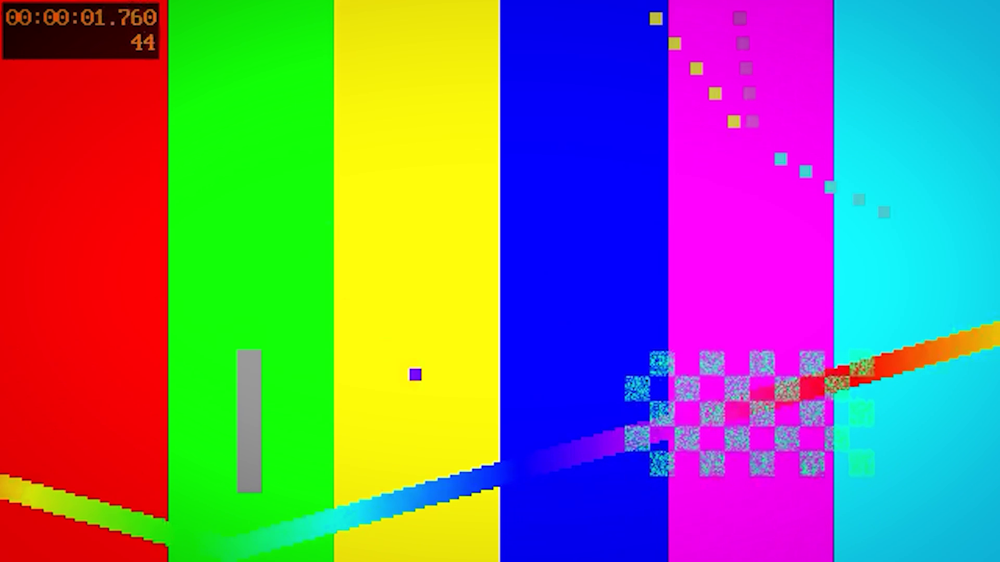

Premiere Pro · Windows and macOS · v1.28.0
Premiere editing from Codex.
Inspect your timeline, adjust effects, animate native controls and export from your local Premiere project. Your footage stays on your computer.

Native controls, verified results.
- 01Timeline and layersInspect clips, make bounded edits, add adjustment layers and reuse an exact layer source.
- 02Effects and keyframesSelect exact effect instances, animate Motion vectors and scalar controls, and clear animation back to static values.
- 03Lumetri and exportAdjust supported native colour controls, animate Exposure and inspect the rendered result.
Read the live test evidence and limits. Opaque Lumetri curves, wheels and LUT payloads remain outside verified structured control. The optional UXP bridge was not connected in this test.
One setup prompt. Mac or Windows.
Premiere Pro must already be installed and licensed. Paste this into Codex:
Install or update Zura Premiere MCP from https://github.com/ZURAVFX/zura-premiere-mcp on this computer. Detect whether this is Windows or macOS and follow its automated setup instructions. Install missing prerequisites, preserve existing projects and source changes, and use the verified latest Zura source. Run node INSTALL-ZURA-PREMIERE-MCP.mjs for standalone setup. If OA Zura Premiere Reels is installed, use its complete private update skill instead. Complete installation in this chat; ask only for sign-in or native security prompts. Never substitute the upstream npm MCP or restart apps. Verify installation and tell me any remaining restart steps.
Already installed? Say “Update the Premiere MCP”. The source updater preserves your working checkout, resolves the current release and runs the matching native installer. No apps restart automatically.
OA membership access is required for the private integration. Its update skill refreshes the whole plugin and pinned MCP together. Public GitHub releases do not silently install updates on your computer.